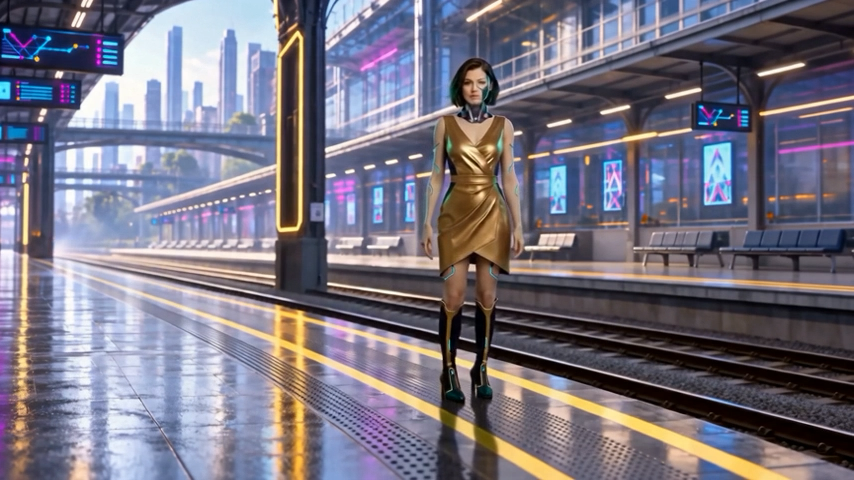
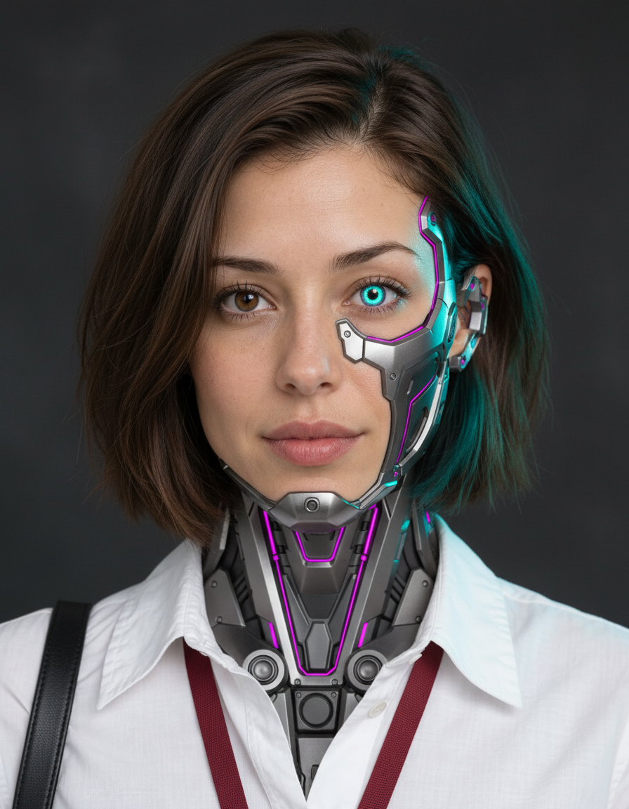
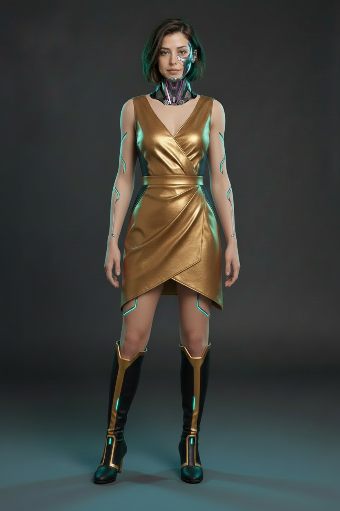
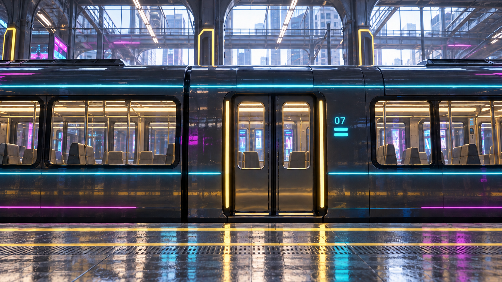

Terrace / Intelligence
Station district skyline and elevated rail. Clear foreground for the route HUD; a ramp leads toward the café arcade.
Unrun promptKeep the story that is working. Give every power the same world, make the product explicit, and make the final win easy to read.
Existing references only No generation credits spent Seedance deferred

Daylight: bright, hazy, warm highlights with cool architectural shade.
Materials: dark brushed metal, layered glass, lightly reflective paving and physical surfaces.
Infrastructure: elevated rail, skybridges and the same skyline.
Technology: cyan edges, restrained magenta signs, warm gold practical lights. Background people and vehicles also belong to this world.



Station district skyline and elevated rail. Clear foreground for the route HUD; a ramp leads toward the café arcade.
Unrun promptGlass/metal storefronts beneath a skybridge. Keep the approved coffee rescue and camera change; redesign the surrounding street.
Unrun promptTransit bulkheads repeat the station's panels, status strips and gold service lights. Metal must visibly buckle.
Unrun promptForward travel beneath the same elevated line. Close paving and bollards give real parallax as Riley accelerates.
Unrun promptUrban elevated track, with a separate parallel running lane. Frame the train nose and Riley large enough to read the pass.
Unrun start promptBegin behind the nose
Riley starts behind the train in her own parallel lane. Both face and travel toward the top of frame.
The diagram explains layout, not exact scale. In the production frame, target a readable Riley around 12–16% of image height while keeping her size believable relative to the train. Moving ground cues must show that the train is also traveling.
The new review introduces AFTERHUMAN — CYBERNETIC IMPLANTS during the transformation and repeats the category on the end card. The voice, music and 45-second timing stay intact.
Watch the product-clarity review · Read the city brief · Reference provenance and prompt index
Scene environments and the overhead in the actual video remain the existing prototypes. This board prepares their replacement; it does not claim those visual corrections are finished. Review this direction before the deferred generation pass.